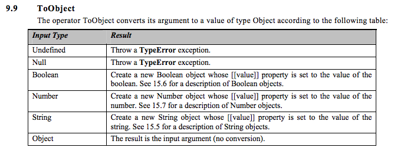

Felleisen-Hieb style semantics for JavaScript
Based on the JavaScript specification (i.e., core algorithms come from the specification)  {% highlight ocaml %} let @toObject = fun(x) . if typeof x === "undefined" then throw ($makeException("TypeError", "toObject received undefined")) else if x === null then throw ($makeException("TypError", "toObject received null")) else if typeof x === "boolean" then ref { "$proto": "$Boolean.prototype", "$class": "Boolean", "$value": x } else if typeof x === "number" then ref { "$proto": "$Number.prototype", "$class": "Number", "$value": x } else if typeof x === "string" then ref { "$proto": "$String.prototype", "$class": "String", "$value": x } else x {% endhighlight %}
Tested to conform with actual Web browsers (December 2009)